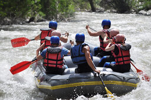

The team at Dry Oar Boating is dedicated to ensuring that you have a fun-filled yet safe adventure. Your satisfaction and safety is always our top priority.

The team at Dry Oar Boating is dedicated to ensuring that you have a fun-filled yet safe adventure. Your satisfaction and safety is always our top priority.
Brace yourself for an adrenaline-fueled journey through the heart of untamed wilderness. White water rafting, a sport as old as time itself, traces its origins back to the earliest explorers navigating treacherous rivers in search of new lands. Today, it remains a thrilling testament to humanity's enduring spirit of adventure. Feel the rush as you plunge into roaring rapids, the icy spray awakening every sense.
With each paddle stroke, you'll conquer the untamed currents, forging a bond with your fellow adventurers that transcends words. Whether you're a seasoned rafter or a novice seeking your first taste of excitement, our expert guides will lead you on an unforgettable voyage through nature's most exhilarating playgrounds.